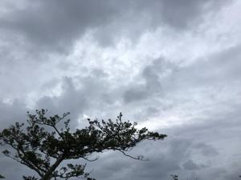
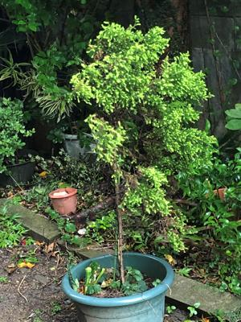

うるがいの話 ある日
最新: 職場の仲間【うるがいの話 ある日】とは 一日だけのプログです
『うるがいの話』の最新一日だけのプログで、通信料が少なく経済的だ。カニの画像をクリックすると全ての日付が載る『うるがいの話』サイトを表示します
|
|
【うるがいの話】 うるがい(ｳﾙｶﾞｲ urugai)とは、『もずくがに』の名前でとても大きくなります。 |
|---|---|
|
|
【カミマヤーの話】 猫のことを方言でマヤーといいます。カミマヤー（kamimayaa）とは、神の猫のことです。 |
|
【たながぁの音楽】 たながぁ（ﾀﾅｶﾞｰ tanagaa）とは手長えびのことで、何種類かあり大きいのは車 エビぐらいになります。 |

|
【ぶながぁの話】 ぶながぁ(ﾌﾞﾅｶﾞｰ bunagaa)とは、赤い髪の毛、赤い身体、そして身長は１ｍ２０ｃｍ ぐらい、川の蟹を食べているの目撃された。場所は沖縄県国頭郡大宜味村のと ある村僕の隣近所に住んでいる爺さんから、聞いた話です。 |
|
|
【ギーマの話】 ギーマ(giima)とは、山原の里山に咲くスズランに似た、 花を付けます。実は食べられます、 気が付くと口の周りが紫になっています。 |
2022年10月31日 (月）職場の仲間
15:10
 
３０年近く同じ職場で働いてた仲間が、本日をもって退職する。ご苦労様でし
た（プログで気持ちを伝えることにする）。
『南極料理人』の映画を録画でみる、『子供の上の乳歯は床下へ、下の乳歯は
屋根上へ投げる』というセリフがあった。おお、小学生の頃か、下の歯が抜け
たとき、屋根にその歯を投げるよう言われたので投げたことを思いだす。今日
は、朝から暴風雨、マンションの駐車場にヨメを迎えいく。車に乗る前、ツル
と滑って転んだ（らしい、見えなかった）ので機嫌が悪く、昼ごはんは自分で
適当に、と言われる。映画がラストの方で、包丁をケースに入れるシーンを見
て、実家の鮮魚店で使っていた包丁があるのを思い出した。さっそく、その包
丁を使い昼の野菜炒めを作った。プロが使っていた包丁（正弘作と刻印）は、
少し錆ていたが砥石で綺麗に砥ぐ。使い勝手は最高！、だった。ヨメは野菜炒
めを食べ、まずいといった。
１５時００分 ビットコインの総資産 ￥８、８０４↓